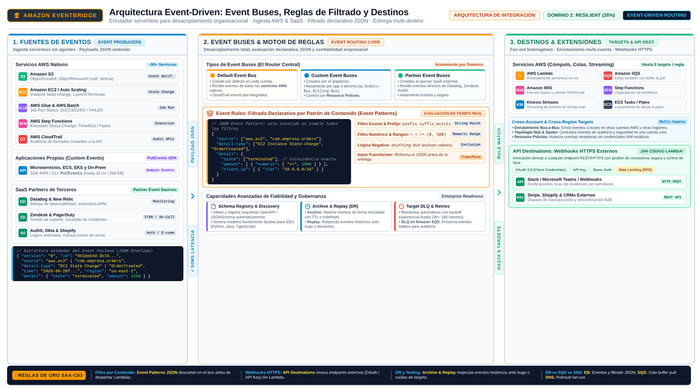

EventBridge Amazon EventBridge
El enrutador serverless de eventos de toda tu organización — y de tus SaaS — que convierte cualquier cambio en un disparador de lógica.
Si SQS es el buzón de una oficina y SNS el megáfono, Amazon EventBridge es la centralita de conmutación del edificio entero: por ella pasan los eventos que generan tus aplicaciones, casi cualquier servicio de AWS y decenas de SaaS externos, y unas reglas deciden qué hacer con cada uno. La documentación oficial lo define como un servicio serverless que usa eventos para conectar componentes de aplicación y facilitar la construcción de aplicaciones event-driven — sistemas débilmente acoplados que emiten y responden a eventos para ganar agilidad y fiabilidad.
El cambio mental respecto a SQS/SNS es el tipo de unidad que viaja: no son "mensajes de trabajo" que tú publicas conscientemente hacia una cola, sino eventos — hechos que ya ocurren (se creó un objeto en S3, cambió un ítem de DynamoDB, finalizó un job de Glue, alguien firmó en el SaaS de socios como Datadog o Zendesk) y que EventBridge puede ingerir, filtrar, transformar y entregar a cero o más destinos. Para el examen, EventBridge es la respuesta por defecto cuando el origen del flujo es un servicio de AWS o un SaaS, y sobre todo cuando el enunciado pide filtering o content-based routing.

Event bus, rules y targets: el vocabulario oficial
El event bus es el router que recibe eventos y los entrega a cero o más destinos — así, exactamente, lo define la documentación oficial. Tu cuenta tiene un bus por defecto (al que llegan los eventos de los servicios de AWS) y puedes crear buses personalizados para separar dominios (por ejemplo, uno por aplicación o por equipo). Publicar en el bus es una llamada API (PutEvents) que pueden hacer tus aplicaciones, o algo que ya hacen los servicios de AWS y los socios SaaS sin que tú escribas código.
La rule es el cerebro del enrutamiento: asocia un event pattern (un JSON que describe qué eventos te interesan — por ejemplo, solo los de EC2 Instance State-change Notification con estado terminated) a uno o más targets. Cuando un evento coincide con el patrón, EventBridge lo entrega a los targets de la rule, con transformación opcional del evento antes de la entrega — puedes reformatear el payload para que el consumidor reciba justo lo que espera. Los targets cubren una lista enorme de servicios de AWS: Lambda, SQS, SNS, Step Functions, API Gateway, ECS, y muchos más. Eventos filtrados por contenido: esa es la capacidad que ni SQS ni SNS dan de forma nativa y que suele decidir la pregunta.
Pipes y EventBridge Scheduler: los dos complementos
La documentación oficial describe dos formas de procesar eventos: event buses y pipes. Los EventBridge Pipes están pensados para integraciones punto a punto: cada pipe recibe eventos de una única fuente (por ejemplo, un stream de DynamoDB o una cola SQS), les aplica enriquecimiento y transformación avanzadas, y los entrega a un único target. El patrón recomendado combina ambos: un pipe toma el stream de DynamoDB como fuente y su target es un event bus; el bus luego reparte a múltiples targets según sus rules. Piensa en el pipe como la "cinta transportadora" que alimenta al "switch" (bus).
El EventBridge Scheduler es un planificador serverless independiente: crea tareas con expresiones cron o de rate para patrones recurrentes, o invocaciones de una sola vez, con ventanas de tiempo flexibles, límites de reintento y retención de invocaciones fallidas. Es la respuesta moderna cuando el enunciado pide ejecutar algo "every day at 2 AM" o "one-time invocation at a specific date" sin mantener servidores ni cron jobs en EC2. En la familia de programadores, EventBridge Scheduler convive con las reglas programadas (scheduled rules) del propio bus, pero el Scheduler es el servicio dedicado y el que conviene nombrar cuando hay requisitos de reintentos o tiempos flexibles.
Cuándo EventBridge, cuándo SQS, cuándo SNS
La pregunta de decisión casi nunca se enuncia como tal: aparece disfrazada de escenario ("necesitamos que cuando llegue un pedido, tres sistemas reaccionen…"). El razonamiento en tres pasos: primero, ¿el flujo nace de un evento de AWS o de un SaaS? Entonces EventBridge es la puerta natural. Segundo, ¿tus propias aplicaciones necesitan un buffer de trabajo con reintentos y DLQ? Eso es SQS. Tercero, ¿un mismo mensaje debe notificarse a muchos destinos heterogéneos (incluyendo personas por email/SMS)? Eso es SNS — o la combinación SNS + SQS. Y recuerda que no compiten: lo idiomático en AWS es EventBridge filtrando y disparando a SQS/SNS/Lambda según el patrón del evento.
| Dimensión | EventBridge | SQS | SNS |
|---|---|---|---|
| Qué transporta | Eventos estructurados (JSON) de apps, AWS y SaaS | Mensajes de trabajo entre tus componentes | Mensajes/notificaciones a suscriptores |
| Modelo | Event bus con rules: filtrado y enrutamiento por contenido | Cola pull con visibility timeout | Pub/sub push a todos los suscriptores |
| Filtro por contenido | Nativo — event patterns por campo | No nativo (filtrado en el consumidor) | Filter policies por atributos de suscripción |
| Fuentes SaaS / AWS | Directo y nativo (servicios AWS + socios) | Solo si tú publicas | Solo si tú publicas |
| Caso típico | Reaccionar a cambios, filtrar, enrutar a N destinos | Buffer durable, trabajo asíncrono | Fan-out y notificación (A2A/A2P) |
o SaaS?"} C1 -->|"sí"| EB["EventBridge
bus + rules"] C1 -->|"no"| C2{"Un mensaje a muchos
destinos distintos?"} C2 -->|"sí, notificar"| SNS["SNS topic
fan-out"] C2 -->|"no, trabajo encolado"| SQS["SQS queue
buffer y reintentos"] EB --> MIX["EventBridge dispara a
SQS SNS o Lambda"] classDef navy fill:#EFF6FF,stroke:#3B82F6,stroke-width:2px,color:#1E293B classDef green fill:#F0FDF4,stroke:#10B981,stroke-width:2px,color:#1E293B classDef amber fill:#FFF7ED,stroke:#F59E0B,stroke-width:2px,color:#1E293B class IN,EB navy class C1,C2 amber class SNS,SQS,MIX green
Cómo cae en el examen: señales y respuestas
| Si el enunciado dice… | La respuesta apunta a… |
|---|---|
| "invoke a Lambda function when an object is uploaded to S3 / on instance termination" | EventBridge rule sobre el evento del servicio (o notificación de S3 según el contexto) |
| "route events based on content / filter before delivering" | EventBridge rules con event pattern |
| "react to events from third-party SaaS" | EventBridge (partner event sources) |
| "run a task every day at a specific time, serverless" | EventBridge Scheduler (cron/rate) |
| "decouple with buffering and retry of failed messages" | SQS (+ DLQ) — distractor: EventBridge si el origen es un evento |
| "one event must trigger email, SMS and a queue" | SNS topic (o EventBridge → SNS/SQS targets) |
- EventBridge = serverless event router para arquitecturas event-driven débilmente acopladas.
- Un event bus recibe eventos y los entrega a cero o más targets; las rules filtran por event pattern y transforman antes de entregar.
- Fuentes: aplicaciones propias + servicios AWS + SaaS socios — esa combinación es la firma de EventBridge.
- Pipes = integración punto a punto (una fuente → un target, con enriquecimiento); suelen alimentar a un bus.
- EventBridge Scheduler = cron/rate y one-time, con reintentos — el reemplazo serverless de tus cron jobs.
- Decisión rápida: evento de AWS/SaaS o filtrado por contenido → EventBridge; buffer de trabajo → SQS; fan-out/notificación → SNS.
- INT-04 Amazon EventBridge — What is (event bus, rules, SaaS events) · docs.aws.amazon.com/eventbridge/latest/userguide/eb-what-is.html